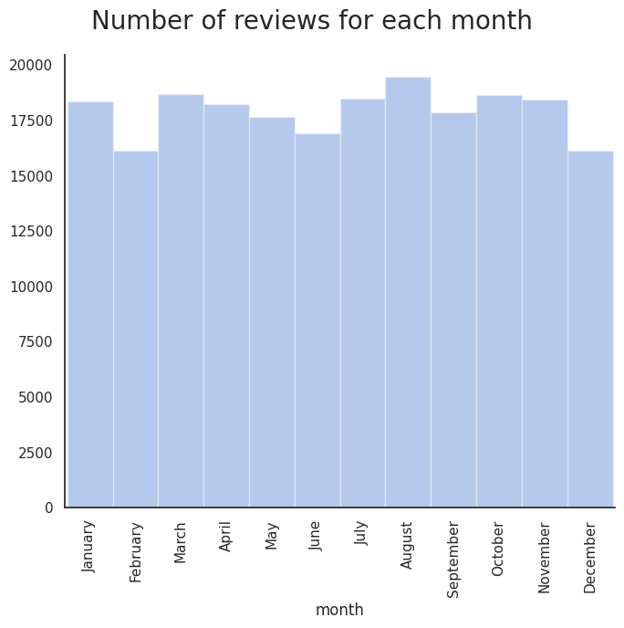
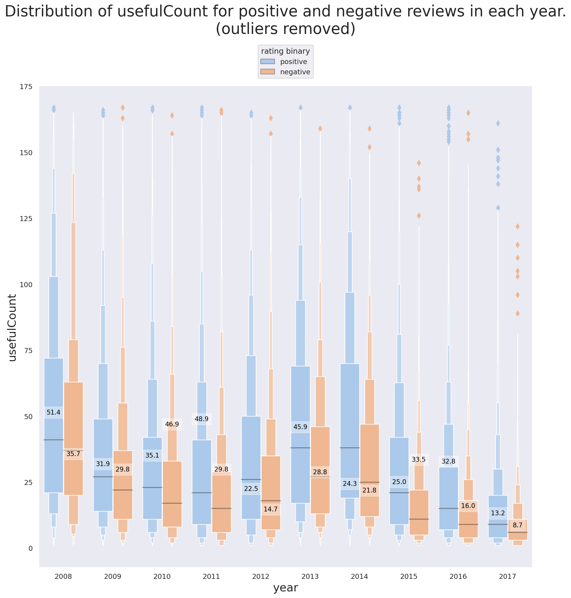
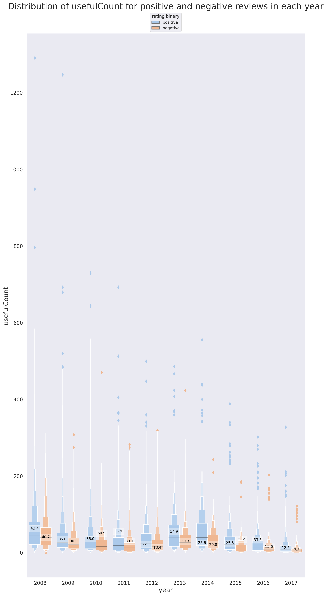

OptiMed - WhatMedicine Best Suits Your Need?
Motivation
The idea behind this project is to analyze the patient review of different drugs (obtained from from Drugs.com) and use the results to design a web application to help the patient find the best drugs according to their symptoms.
I like to break down the idea that I have into a few parts to make it more clear and enhances the thought process for potential development of each part:
-
I spent some time and looked at the different data sources that I knew such as Data is beautiful, data.world, Data is plural, kaggle, UCI datasets and so on and found a Drug Review Dataset (Drugs.com) about cutomer reviews of 3671 unique drugs.
- I thought there are probably many people like me neither know nor look for the drug that best fits their symptoms and just go with that one drug that they always relied on when they had a headache ... So I thought about the ways that this data set can be used to find the best hit from the data set given:
- the symptoms
- location (living close to CVS, walgreens etc.)
- budget
- potential allergies or intolerance
- other drugs being taken currently (if any) that can cause drug interactions
- urgency of the situation (might influence the importance of the location)
- ...
of the user.
My Initial Goal was to
- Build a natural language processing model to recommend the right medicine according to the user condition
- Use other resources such as Drug Bank to make the model more robust by considering potential drug interactions, side effects etc.
- Use other APIs such as GoodRx to build a real-time model that considers other user-defined factors such as location, price range, and ease of transportation, weather condition, delivery options etc. to make a more calculated decision
- Expand the usefulness of the app to medical professionals so that they can offer patients-customized solutions
Loading the required libraries
import os
import re
import sys
import nltk
import warnings
import numpy as np
import pandas as pd
import seaborn as sns
import matplotlib.pyplot as plt
import chart_studio.plotly as py
import plotly.graph_objs as go #importing graphical objects
from matplotlib import cm as cm
from IPython.display import Image
from matplotlib import rc, rcParams
from IPython.core.display import HTML
from plotly.offline import download_plotlyjs, init_notebook_mode, plot, iplot
from viz import *
from toggle_cell import toggle_code as hide_cell
from matplotlib.colors import Normalize
from scipy import stats
from scipy.stats import norm
warnings.filterwarnings('ignore')
rcParams['font.family'] = 'serif'
rc('font',**{'family':'serif','serif':['Helvetica']})
rc('text', usetex=False)
# rc('text.latex', preamble=r'\usepackage{underscore}')
np.set_printoptions(precision=3)
pd.set_option('display.float_format', lambda x: '%.3f' % x)
sns.set_style('white')
sns.set(rc={"figure.dpi":100})Data Exploration and Preprocessing
The data was obtained from UCI Drug Review Dataset (Drugs.com). The following is the data description provided by the reference:
Data Set Information
The dataset provides patient reviews on specific drugs along with related conditions and a 10 star patient rating reflecting overall patient satisfaction. The data was obtained by crawling online pharmaceutical review sites. The intention was to study
- Sentiment analysis of drug experience over multiple facets, i.e. sentiments learned on specific aspects such as effectiveness and side effects,
- the transferability of models among domains, i.e. conditions, and
- the transferability of models among different data sources (see UCI Drug Review Dataset (Druglib.com)).
The data is split into a train (75%) a test (25%) partition (see publication) and stored in two .tsv (tab-separated-values) files, respectively.
Data Usage Policy
When using this dataset, you agree that you
- only use the data for research purposes
- don't use the data for any commerical purposes
- don't distribute the data to anyone else
Attribute Information
- uniqueID: the ID unique to each patient that has written the review
- drugName (categorical): name of the drug
- condition (categorical): condition that the drug was used to address
- review (text): patient review
- rating (numerical 0-10)
- date (date): the date review was posted
- usefulCount (numerical): number of users that found the review useful
df_train = pd.read_csv('data/drugsComTrain_raw.csv', parse_dates=['date'])
df_test = pd.read_csv('data/drugsComTest_raw.csv', parse_dates=['date'])
df_train.head()| uniqueID | drugName | condition | review | rating | date | usefulCount | |
|---|---|---|---|---|---|---|---|
| 0 | 206461 | Valsartan | Left Ventricular Dysfunction | "It has no side effect, I take it in combinati... | 9 | 2012-05-20 | 27 |
| 1 | 95260 | Guanfacine | ADHD | "My son is halfway through his fourth week of ... | 8 | 2010-04-27 | 192 |
| 2 | 92703 | Lybrel | Birth Control | "I used to take another oral contraceptive, wh... | 5 | 2009-12-14 | 17 |
| 3 | 138000 | Ortho Evra | Birth Control | "This is my first time using any form of birth... | 8 | 2015-11-03 | 10 |
| 4 | 35696 | Buprenorphine / naloxone | Opiate Dependence | "Suboxone has completely turned my life around... | 9 | 2016-11-27 | 37 |
Basic Statistics of the Data
pd.concat([df_train.describe(),df_test.describe()], axis=1)| uniqueID | rating | usefulCount | uniqueID | rating | usefulCount | |
|---|---|---|---|---|---|---|
| count | 161297.000 | 161297.000 | 161297.000 | 53766.000 | 53766.000 | 53766.000 |
| mean | 115923.585 | 6.994 | 28.005 | 116386.701 | 6.977 | 27.990 |
| std | 67004.445 | 3.272 | 36.404 | 67017.740 | 3.285 | 36.173 |
| min | 2.000 | 1.000 | 0.000 | 0.000 | 1.000 | 0.000 |
| 25% | 58063.000 | 5.000 | 6.000 | 58272.500 | 4.000 | 6.000 |
| 50% | 115744.000 | 8.000 | 16.000 | 116248.500 | 8.000 | 16.000 |
| 75% | 173776.000 | 10.000 | 36.000 | 174586.750 | 10.000 | 36.000 |
| max | 232291.000 | 10.000 | 1291.000 | 232284.000 | 10.000 | 949.000 |
print(f'train and test shapes are {df_train.shape} and {df_test.shape}, respectively.')
train and test shapes are (161297, 7) and (53766, 7), respectively.Data Exploration and Preprocessing
We can start by looking at the reviews.
df_train['review'].tail()161292 "I wrote my first report in Mid-October of 201... 161293 "I was given this in IV before surgey. I immed... 161294 "Limited improvement after 4 months, developed... 161295 "I've been on thyroid medication 49 years... 161296 "I've had chronic constipation all my adu... Name: review, dtype: object
Patient reviews include some unwanted html characters which can be removed using 'html.parser' module of BeautifulSoup.
from bs4 import BeautifulSoup
def remove_html(raw_review):
# 1. Remove HTML characters
return BeautifulSoup(raw_review, 'html.parser').get_text()
df_test['review'].apply(remove_html)
df_train['review'].apply(remove_html).tail()161292 "I wrote my first report in Mid-October of 201...
161293 "I was given this in IV before surgey. I immed...
161294 "Limited improvement after 4 months, developed...
161295 "I've been on thyroid medication 49 years, I s...
161296 "I've had chronic constipation all my adult li...
Name: review, Length: 161297, dtype: object
The same issue exists for the condition column so we repeat the cleaning for this column as well. However, we first need to change the data-type of this column from 'O' (object) to string.
df_test['condition']=df_test['condition'].astype(str).apply(remove_html)
df_train['condition']=df_train['condition'].astype(str).apply(remove_html)Data Imputation
We will examine the column to identify the missing values
for col in df_train.columns:
if df_train[col].isnull().values.any():
print('train data has {0:d} missing values in column "{1:s}" ({2:.3f}%)'
.format(len(df_train[df_train[col].isna()]),
col,
len(df_train[df_train[col].isna()]) / len(df_train)))
if df_test[col].isnull().values.any():
print('test data has {0:d} missing values in column "{1:s}" ({2:.3f}%)'
.format(len(df_test[df_test[col].isna()]),
col,
len(df_test[df_test[col].isna()]) / len(df_test)))train data has 899 missing values in column "condition" (0.006%)
test data has 295 missing values in column "condition" (0.005%)We drop the missing elements as the number of missing values are not significant relative to the entire population.
df_train = df_train.dropna(axis=0)
df_test = df_test.dropna(axis=0)Next, we'll make some observations regarding the relatonships between the features using Exploratory Data Analysis.
Exploratory Data Analysis
We can take a look at the unique values for uniqueID, drugName, and condition to:
- See if there are multiple reviews from a single user,
- Get a sense of the number of unique drugs in the data set,
- Find the drugs that are most commonly used,
- ...
df_all = df_train.append(df_test, ignore_index=True)
for col in ['uniqueID', 'drugName', 'condition']:
print('{0:d} unique values for {1:s} in train data of length {2:d}' \
.format(len(df_train[col].unique().tolist()), col, len(df_train)))
print('{0:d} unique values for {1:s} in test data of length {2:d}' \
.format(len(df_test[col].unique().tolist()), col, len(df_test)))
print('{0:d} unique values for {1:s} in the entire data of length {2:d}' \
.format(len(df_all[col].unique().tolist()), col, len(df_all)))161297 unique values for uniqueID in train data of length 161297
53766 unique values for uniqueID in test data of length 53766
215063 unique values for uniqueID in the entire data of length 215063
3436 unique values for drugName in train data of length 161297
2637 unique values for drugName in test data of length 53766
3671 unique values for drugName in the entire data of length 215063
885 unique values for condition in train data of length 161297
709 unique values for condition in test data of length 53766
917 unique values for condition in the entire data of length 215063
Note that the total number of uniqueIDs is equal to the sum of uniqueIDs in the train and test data, meaning that each patient has written one review. We can now make some observations regarding some of the features of the dataset.
User rating histogram for train and test data
sns.set(style="white", palette="muted")
f, axes = plt.subplots(1, 2, figsize=(14, 7), sharex=False, sharey=False)
sns.despine(left=False)
colors = ['blue', 'orange']
data_labels = ['train', 'test']
plots, handles = [], []
for i, data in enumerate([df_train, df_test]):
plots.append(sns.distplot(data['rating'],
kde=False,
color=colors[i],
ax=axes[i],
label=data_labels[i])
)
plots[i].set_xticks(np.arange(1,11))
h, l = plots[i].get_legend_handles_labels()
handles.append(h[0])
plt.legend(labels=data_labels,
handles=handles,
bbox_to_anchor=(1,1,0,0),
loc='center left',
fontsize=12)
plt.suptitle('Patient review-rating distributions for train and test data', fontsize=20)
plt.tight_layout()
plt.show()

sns.set(style="white", palette="muted")
f, ax = plt.subplots(1, 1, figsize=(7, 7))
sns.despine(left=False)
df_all['year'] = df_all['date'].dt.year
df_all['month'] = df_all['date'].dt.month
years=sorted(df_all['year'].unique())
g = sns.distplot(df_all['year'],bins=len(years),
kde=False,
ax=ax)
# fix the ticks and labels
for i,rect in enumerate(g.patches):
rect.set_width(1)
rect.set_x(years[i]-0.5)
ax.set_xticks(list(np.asarray(years)))
plt.suptitle('Number of reviews per year', fontsize=20)
plt.tight_layout()
plt.show()
Variation of review count over the years
sns.set(style="white", palette="muted")
f, ax = plt.subplots(1, 1, figsize=(7, 7))
sns.despine(left=False)
month_names = [month_name[x] for x in np.arange(1,13)];
df_all['month'] = df_all['date'].dt.month
months=sorted(df_all['month'].unique())
g = sns.distplot(df_all['month'],bins=len(months),
kde=False,
ax=ax)
# fix the ticks and ticklabels
for i,rect in enumerate(g.patches):
rect.set_width(1)
rect.set_x(months[i]-0.5)
g.set_xticks(months)
g.set_xticklabels(month_names, rotation=90)
plt.suptitle('Number of reviews for each month', fontsize=20)
plt.tight_layout()
plt.show()
Mean monthly and annual ratings
f, ax = plt.subplots(2, 1, figsize=(14, 14), sharex=False, dpi=200)
g_y = sns.boxplot(x='year', y='rating',data=df_all, ax=ax[0], palette="Paired", showmeans=True)
g_m = sns.boxplot(x='month', y='rating',data=df_all, ax=ax[1], palette="Paired", showmeans=True)
g_m.set_xticklabels(month_names);
plt.suptitle('Average user rating for each month and year', fontsize=22, y=0.92);

Hmmm... Drugs getting worse or user becoming more critical?
Drugs that are prescribed for many conditions
Another interesting observation is to look at the numebr of drugs that are used to address mutiple different medical conditions and see how the user ratings change for each condition. In other words, if a drug is known to be good for addressing condition 'A' does that mean it will do a good job in adressing condition 'B'?
n_drugs = 20
drugs_w_most_cond = df_all.groupby(['drugName'])['condition'] \
.nunique() \
.sort_values(ascending=False)[:n_drugs]
print(drugs_w_most_cond)drugName Prednisone 39 Gabapentin 31 Ciprofloxacin 25 Doxycycline 25 Amitriptyline 24 Neurontin 23 Metronidazole 23 Venlafaxine 23 Lyrica 22 Dexamethasone 22 Zoloft 21 Cymbalta 20 Triamcinolone 20 Azithromycin 20 Clarithromycin 19 Seroquel 19 Effexor XR 19 Cipro 18 Sertraline 18 Naproxen 18 Name: condition, dtype: int64
fig, ax = plt.subplots(1, 1, figsize=(16, 6), dpi=200)
drug_arr = []
for i, (drug, count) in enumerate(drugs_w_most_cond.items()):
drug_arr += count*[drug]
tmp_df = pd.DataFrame(drug_arr, columns=['drug'])
g = sns.countplot(x='drug', data=tmp_df, ax=ax)
g.set_xlabel(g.get_xlabel(), fontsize=22)
g.set_ylabel(g.get_ylabel(), fontsize=22, labelpad=10)
ylabs = g.get_yticklabels()
plt.setp(ax.get_xticklabels(), rotation=45, ha='right', fontsize=16)
plt.setp(ax.get_yticklabels(), fontsize=16)
g.set_title('Drugs addressing the most unmber of unique medical conditions',y=1.05, fontsize=28)
sns.despine(left=False)

Conditions that are treated using multiple different drugs
Similar to previous analysis, we can take a look at the conditions that are treated using variety of drugs.
n_conditions = 20
conditions_w_most_drugs = df_all.groupby(['condition'])['drugName'] \
.nunique() \
.sort_values(ascending=False)[:n_conditions]
print(conditions_w_most_drugs)condition
Not Listed / Othe 253
Pain 219
Birth Control 181
High Blood Pressure 146
Acne 127
Depression 115
Rheumatoid Arthritis 107
Diabetes, Type 2 97
Allergic Rhinitis 95
Insomnia 85
Osteoarthritis 84
Bipolar Disorde 82
Anxiety 81
Abnormal Uterine Bleeding 77
Endometriosis 64
3 users found this comment helpful. 62
Psoriasis 61
Migraine 60
ADHD 58
4 users found this comment helpful. 57
Name: drugName, dtype: int64
Note that there are some conditions that we need to remove, i.e. Not Listed / Othe , 3 users found this comment helpful , and 4 users found this comment helpful. We can define a pattern using regular expressions to find the problematic rows as follows.
df_all[df_all.condition.str.contains('(^nan$|Not Listed|found this comment helpful)')].head()| uniqueID | drugName | condition | review | rating | date | usefulCount | |
|---|---|---|---|---|---|---|---|
| 104 | 220696 | Loestrin 24 Fe | 2 users found this comment helpful. | "I'm 16 and I have been on Loestrin 24 f... | 3 | 2010-11-03 | 2 |
| 194 | 67383 | Provera | 4 users found this comment helpful. | "I'm 24 years old and have always had a p... | 1 | 2016-03-27 | 4 |
| 241 | 81588 | Yaz | 3 users found this comment helpful. | "I took Yaz for a little over 2 years. From a... | 3 | 2010-06-01 | 3 |
| 262 | 132965 | Loestrin 24 Fe | 4 users found this comment helpful. | "Took this pill for 1.) Acne and 2.) Birth Con... | 2 | 2014-06-24 | 4 |
| 389 | 91050 | Norco | 11 users found this comment helpful. | "I have suffered with low back pain - 2 surger... | 9 | 2009-03-15 | 11 |
We drop the rows corresponding to the mis-parsed conditions and then plot the data.
bad_indices = df_all[df_all.condition.str.contains('(^nan$|Not Listed|found this comment helpful)')].index
df_all.drop(bad_indices, inplace=True)
df_all.reset_index(drop=True)
conditions_w_most_drugs = df_all.groupby(['condition'])['drugName'] \
.nunique() \
.sort_values(ascending=False)[1:n_conditions+1]
fig, ax = plt.subplots(1, 1, figsize=(16, 6), dpi=200)
condition_arr = []
for i, (condition, count) in enumerate(conditions_w_most_drugs.items()):
condition_arr += count*[condition]
tmp_df = pd.DataFrame(condition_arr, columns=['condition'])
g = sns.countplot(x='condition', data=tmp_df, ax=ax)
g.set_xlabel(g.get_xlabel(), fontsize=22)
g.set_ylabel(g.get_ylabel(), fontsize=22, labelpad=10)
ylabs = g.get_yticklabels()
plt.setp(ax.get_xticklabels(), rotation=45, ha='right', fontsize=16)
plt.setp(ax.get_yticklabels(), fontsize=16)
g.set_title('Medical conditions with the most number of unique drugs addressing them',y=1.05, fontsize=28)
sns.despine(left=False)

Variation of usefulCount with rating
One of the questions that I had was whether the positiveness/negativeness of the rating influence the number of peole that find the review useful?
f, ax = plt.subplots(1, 1, figsize=(14, 6), dpi=200)
g = sns.boxplot(y='usefulCount', x='rating',data=df_all,
ax=ax, palette="Paired", showmeans=True,
showfliers=False)
g.set_title('The distribution of usefulCount for different drug ratings.'+
'\n(outliers are not shown)', fontsize=24, y=1.02);
I find this result really interesting. What we can infer from it is that a positive review is more likely to be found useful than a negative review by others who read the review.
As we observed in Figure 2, the highly-rated reviews are more frequent compared to the poorly-rated ones. We need to define a metric for a positive vs. negative to be able to further inspect the quality of the reviews. Gouping the reviews into positive and negative categories can shed light on the correlation of the review ratings with more than just one other feature. For now, we classify the reviews with rating below 5.5 as negative and otherwise positive.
df_all['rating_binary'] = df_all['rating'].apply(lambda x: 'positive' if x>5.5 else 'negative')
print("The dataset includes {0:d} positive and {1:d} negative reviews" \
.format(len(df_all[df_all["rating_binary"]=="positive"]), \
len(df_all[df_all["rating_binary"]=="negative"])))The dataset includes 148682 positive and 63424 negative reviews
df_all.head()| uniqueID | drugName | condition | review | rating | date | usefulCount | year | month | rating_binary | |
|---|---|---|---|---|---|---|---|---|---|---|
| 0 | 206461 | Valsartan | Left Ventricular Dysfunction | "It has no side effect, I take it in combinati... | 9 | 2012-05-20 | 27 | 2012 | 5 | positive |
| 1 | 95260 | Guanfacine | ADHD | "My son is halfway through his fourth week of ... | 8 | 2010-04-27 | 192 | 2010 | 4 | positive |
| 2 | 92703 | Lybrel | Birth Control | "I used to take another oral contraceptive, wh... | 5 | 2009-12-14 | 17 | 2009 | 12 | negative |
| 3 | 138000 | Ortho Evra | Birth Control | "This is my first time using any form of birth... | 8 | 2015-11-03 | 10 | 2015 | 11 | positive |
| 4 | 35696 | Buprenorphine / naloxone | Opiate Dependence | "Suboxone has completely turned my life around... | 9 | 2016-11-27 | 37 | 2016 | 11 | positive |
I use Seaborn's boxenplot() (or Letter-value plot) for visualization. It can be thought of as an extension of boxplot that is more convenient for large data as it offers more precise estimates of quantiles beyond the quartiles which might be important but missed when using boxplot. Furthermore, I include two plots for this part where the first plot (Figure 9) shows the data where the top and bottom 0.01% of the population are removed and the second plot (Figure 10) shows the full data.
f, ax = plt.subplots(1, 1, figsize=(14, 14), dpi=200)
sns.set_style('dark')
bar_width = 0.8
q_low = df_all["usefulCount"].quantile(0.01)
q_hi = df_all["usefulCount"].quantile(0.99)
df_outliers_removed = df_all[(df_all["usefulCount"] < q_hi) & (df_all["usefulCount"] > q_low)]
means_positive = df_all[df_all['rating_binary']=='positive'].groupby('year')['usefulCount'].mean()
means_negative = df_all[df_all['rating_binary']=='negative'].groupby('year')['usefulCount'].mean()
means = np.hstack([means_positive,means_negative])
g = sns.boxenplot(x="year", y="usefulCount", hue="rating_binary",width=bar_width,
palette="pastel", data=df_outliers_removed, ax=ax)
g.set_xlabel(g.get_xlabel(), fontsize=18)
g.set_ylabel(g.get_ylabel(), fontsize=18)
for i,mu in enumerate(means):
shift = bar_width/4*pow(-1,i+1); # shift left for positive, right for negative
g.text(i//2+shift, mu, f"{np.round(mu,1)}",
fontdict={'color':'black', 'fontsize':10}, rotation=0, ha='center', va='center',
bbox=dict(facecolor='white', alpha=0.4, edgecolor=None))
plt.legend(bbox_to_anchor=(0.5, 1.05), loc='center', borderaxespad=0., title='rating binary')
g.set_title('Distribution of usefulCount for positive and negative reviews in each year.\n'+
'(outliers removed)', fontsize=24, y=1.1);
f, ax = plt.subplots(1, 1, figsize=(14, 28), dpi=200)
sns.set_style('dark')
bar_width = 0.8
means_positive = df_all[df_all['rating_binary']=='positive'].groupby('year')['usefulCount'].mean()
means_negative = df_all[df_all['rating_binary']=='negative'].groupby('year')['usefulCount'].mean()
means = np.hstack([means_positive,means_negative])
g = sns.boxenplot(x="year", y="usefulCount", hue="rating_binary",width=bar_width,
palette="pastel", data=df_all, ax=ax)
g.set_xlabel(g.get_xlabel(), fontsize=18)
g.set_ylabel(g.get_ylabel(), fontsize=18)
for i,mu in enumerate(means):
shift = bar_width/4*pow(-1,i+1); # shift left for positive, right for negative
g.text(i//2+shift, mu, f"{np.round(mu,1)}",
fontdict={'color':'black', 'fontsize':10}, rotation=0, ha='center', va='center',
bbox=dict(facecolor='white', alpha=0.4, edgecolor=None))
plt.legend(bbox_to_anchor=(0.5, 1.02), loc='center', borderaxespad=0., title='rating binary')
plt.setp(ax.get_xticklabels(), fontsize=14)
plt.setp(ax.get_yticklabels(), fontsize=14)
g.set_title('Distribution of usefulCount for positive and negative reviews in each year', fontsize=24, y=1.04);
There are some interesting detils tht are revealed using Figures 9 and 10.
-
In support of the point brought up previously, that positive reviews are more likely to be found useful, we can see that the mean
usefulCountfor positive reviews is higher than that of the negative reviews in 8 out of 10 years (every year except 2010 and 2015). -
2012 and 2014 are the only years where the mean of
usefulCountis lower than its median for both positive and negative reviews (same for negative reviews of 2008). What this tells us is that there are -
The median of
usefulCountfor positive reviews is higher than that of the negative reviews for all years. -
Note that hwo excluding the reviews with very high
usefulCountcan influence our interpretation. In this specific project, the reviews with highusefulCountcan't and shouldn't be excluded because they are simply not outliers. -
The reason why almost all the outliers (denoted by the diamond symbol) in both figures 9 and 10 correspond to the observations with high
usefulCountis that there are a lot of reviews whereusefulCount=0and in fact a quick investigation shows that the number of observations withusefulCount=0is more than 1% of all the reviews. This is also the reason behind the mean of the population dropping for all the situations (TheusefulCountcan't be negative!)
pct = abs((len(df_all[(df_all["usefulCount"] > q_low)])-len(df_all))/len(df_all))*100
print(f"{pct:.1f}%")3.8%
Sentiment Analysis
Sentiment analysis is the process of analyzing text/voice data using natural language processing (NLP), text analysis, and computational linguistics to extract and determine the emotional tone, attitude, or opinion carried by the data. The use of sentiment analysis is common in areas such as healthcare, social media, and marketing to study surveys, reviews, user comments, customer text/voice etc.
Data preparation for sentiment analysis
Stopwords
stopwords are words that we do not want them taking up space in our database, or taking up valuable processing time. For this, we can remove them easily by storing a list of words that we consider to be stop words. Even though when it comes to sentiment analysis the popular opinion is to remove stopwords, removing them is not always the best idea, especially if the context of the phrases may influence the performance of the algorithm.
For now we will remove the stopwords from the review column but we first make sure that the ones that carry an emotional meaning are not removed as they are important for sentiment analysis; For instance, there are many words (see below) with negative connotation that are required to be removed them from the stopwords:
| aren't | haven't | not |
| couldn't | isn't | can't |
| didn't | mightn't | shan't |
| doesn't | mustn't | shouldn't |
| don't | needn't | wasn't |
| hadn't | no | weren't |
| hasn't | nor | wouldn't |
Cleaning, tokenization, and stemming
We already scanned the reviews to remove unwanted html characters using the 'html.parser' of BeautifulSoup. However, there is some further cleaning necessary besides the removal of unwanted characters. We also need to tokenize the reviews, i.e. break it up to pieces such as words, keywords, phrases, symbols etc. before sttempting to train the model for Sentiment Analysis.
We will define a simple function for text-cleaning, tokenization, and removal of the important negative verbs from the list of stopwords. We also take advantage of nltk's stopwords library to make sure all the unwanted words are removed from the reviews. Lastly, we use nltk's SnowballStemmer which is meant to remove morphological affixes from words, leaving only the word stem. This can reduce the computation cost significantly.
from wordcloud import WordCloud, STOPWORDS
import nltk
from nltk import PorterStemmer as Porter_stemmer
from nltk.corpus import stopwords
from nltk.stem.snowball import SnowballStemmer
from bs4 import BeautifulSoup
nltk.download('stopwords')
Snowball_stemmer = SnowballStemmer('english', ignore_stopwords=True)
nltk_stopwords = stopwords.words('english')
stopWords = STOPWORDS.union(nltk_stopwords)
remove_from_stopWords = ["aren't", "couldn't", "didn't", "doesn't", "don't", "hadn't", "hasn't",
"haven't", "isn't", "mightn't", "mustn't", "needn't", "no", "nor", "not",
"can't", "shan't", "shouldn't", "wasn't", "weren't", "wouldn't"]
for i in remove_from_stopWords:
stopWords.remove(i)
def clean_review(raw_review, stopWords=stopWords, stemmer=Snowball_stemmer):
# 1. Substitute all non-letter characters with a space
letters_only = re.sub('[^a-zA-Z]', ' ', review_text)
# 2. lower letters and remove spaces
words = letters_only.lower().split()
# 3. Stopwords
meaningfulWords = [w for w in words if not w in stopWords]
# 4. Stemming
stemming_words = [stemmer.stem(w) for w in meaningfulWords]
# having
# had ======> have
# have
# 5. space join words and return
return( ' '.join(stemming_words))We can run a quick sanity check!
print(df_train['review'][110])"Been dealing with restless leg syndrome.for about 2 years. It kept me from falling asleep. First they gave me flexiril. And it did nothing. Than a miracle came about and I was prescribed reprinol and my legs haven't twitched since . Amazing drug I must say. My sleep has improved greatly"
print(clean_review(df_train['review'][110]))deal restless leg syndrom year kept fall asleep first gave flexiril noth miracl came prescrib reprinol leg twitch amaz drug must say sleep improv great
Note that not all the words are going to look meaningful since we see the stems.
WordCloud
wordcloud is a nice way to visually represent of words. I use python's WordCloud library for this purpose. We can take a look at most frequent words in positive and negative reviews using a customized wordcloud function.
def cloud_of_words(text_df, mask=None, fig_size=(16, 5), collocations=True,
max_words=150, width=800, height=250, background_color="#006666",
stopWords=None, relative_scaling=0, title='word cloud',
title_size=28, random_state=None, max_font_size=100, colormap=None):
wordcloud = WordCloud(stopwords=stopWords, max_words=max_words, collocations=collocations,
max_font_size=max_font_size, random_state=random_state,
width=width, height=height, mask=mask, background_color=background_color,
colormap=colormap, relative_scaling=relative_scaling).generate(str(text_df))
plt.figure(figsize=fig_size)
plt.imshow(wordcloud)
plt.title(title, fontsize=title_size, y=1.02)
plt.axis('off')
plt.tight_layout()We can now visualize the wordcloud of positive
cloud_of_words(df_all[df_all['rating_binary']=='positive']['review'],
stopWords=stopWords,
title='Frequent words in positive reviews',
colormap='magma',
background_color='steelblue')

and negative reviews.
cloud_of_words(df_all[df_all['rating_binary']=='negative']['review'],
stopWords=stopWords,
title='Frequent words in negative reviews',
colormap='autumn')
n-grams
n-gram is a contiguous sequence of n items from a given sample of text or speech (ref). n-grams are widely used in NLP for applications such as spelling correction, word breaking and text summarization. The following table shows the n-gram representation of "This is a beautiful present!" for n=1 (unigram), n=2 (bigram), n=3 (trigram), and n=4(4-gram).
| unigram | bigram | trigram | 4-gram |
|---|---|---|---|
| This | This is | This is a | This is a beautiful |
| is | is a | is a beautiful | is a beautiful present! |
| a | a beautiful | a beautiful present! | |
| beautiful | beautiful present! | ||
| present! |
Next, we define a simple function to generate n-grams. We will use this function later on in our training pipeline.
def gen_n_grams(sentence, n=4, stopWords=stopWords):
token = [token for token in sentence.lower().split(
' ') if token != '' if token not in stopWords]
n_grams = zip(*[token[i:] for i in range(n)])
return [' '.join(gram) for gram in n_grams]
gen_n_grams('The beautiful moment that all of us have been waiting for has finally arrived!')['beautiful moment us waiting', 'moment us waiting finally', 'us waiting finally arrived!']
Note that the stopwords are removed before the n-grams are generated.